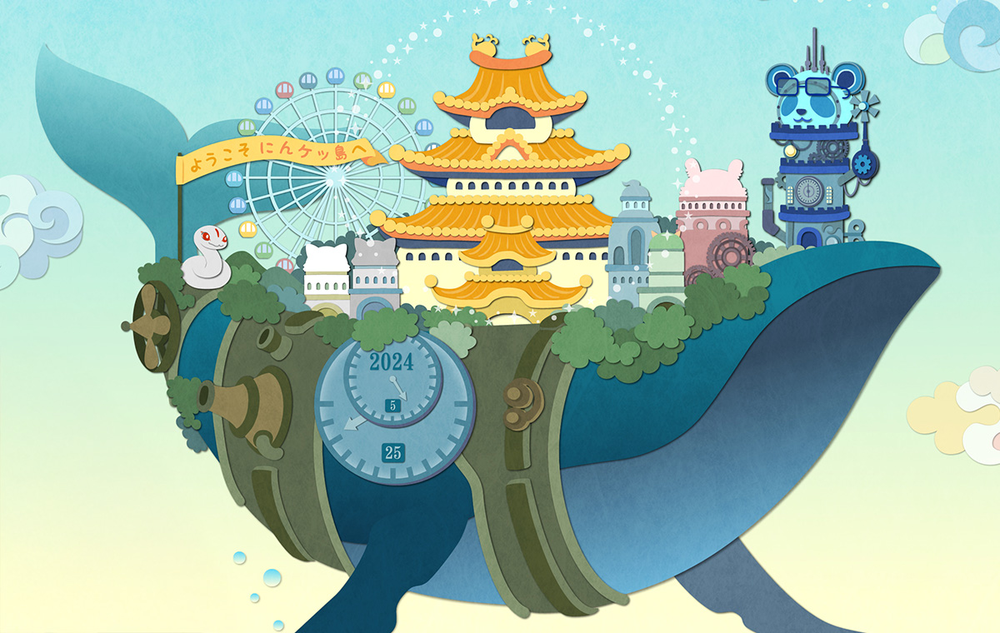

HP/LP実績
NinjaDAO主催 にんケット2024様よりご依頼
プロジェクト概要:
チーム制作でのホームページ開発プロジェクト。Studio（ホームページ制作ソフト）を活用して、効率的かつ効果的なウェブサイト制作に取り組みました。
主な制作内容:
- 下層ページ数の作成: デザインエンティティを使用して、下層ページの詳細設計と構成を検討。
- レスポンシブデザイン: デスクトップ、タブレット、モバイルに対応するレイアウトを調整し、ブレークポイントを設定。
- Studio基本操作の指導: 制作チームに対してStudioの使用方法をレクチャーし、効率的な作業フローを確立。
- 追加業務: Canvaでアイキャッチ画像を制作し、視覚的な魅力を高めました。
プロジェクトの特徴:
- 視覚面での付加価値（アイキャッチ画像制作）
- プロジェクト外活動としてのイベント企画提案
- チーム制作による効率的な開発プロセス
- 最新ウェブデザインツールの活用による高品質なデザイン
NinjaDAO主催 にんケット2025様よりご依頼
プロジェクト概要:
ホームページ運営・出展者対応サポート
公式ホームページの更新・出展者対応・FAQ制作サポートを担当。イベント当日受付運営・来客対応。
サークルカットページ・FAQページの作成・更新
出展席からの提出物回収・催促対応
FAQ質問・回答文の作成と関係者確認
公式サイト文章の修正・ブラッシュアップ
イベント公式サイトのドメイン管理・運用サポート
【身につけたスキル】
Web運営・管理スキル
情報整理・ライティング力
出展者対応・進行管理力
チーム内コミュニケーション力
ドメイン・サイト維持管理スキル
【ポイント】
読み手目線を意識した文章設計、運営者・出展者双方に配慮した調整力、
サイト運営全体を支える行動力を磨きました。